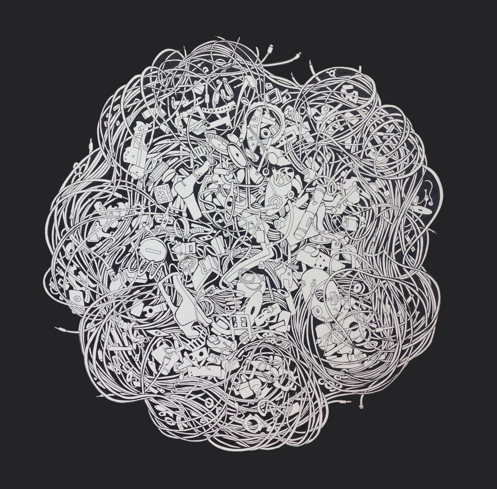
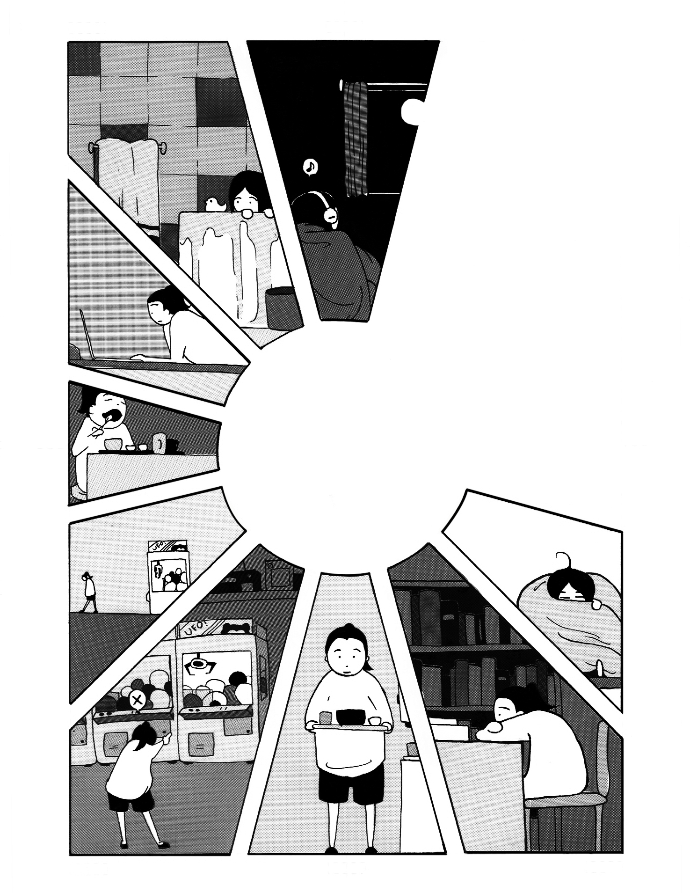

get published!

above: art by Vivian Xiao from LQ volume 10, issue 2 (winter + spring 2016)
GENERAL GUIDELINES
Leland accepts submissions exclusively from current Stanford students.
We accept submissions on a rolling basis throughout the year. We publish on a “Stanford quarterly” basis–that is, three times a year (fall, winter, and spring).
All submissions to Leland must be original, unpublished work.
All submissions are judged anonymously by the editors. If selected, contributors will work one-on-one with Leland Quarterly editors to produce a polished piece for publication.
The editors of Leland are concerned first and foremost with the quality of expression exhibited in a work, and not in the genre of work itself. Our goal is to have quality content across a breadth of disciplines, so please do not be afraid to innovate in your submissions.
WRITING GUIDELINES
Leland accepts and encourages submissions in a wide range of disciplines, including fiction, poetry, creative nonfiction (e.g., memoir, campus culture, student life), reviews (books, movies, music) and political essays (full length investigative pieces), and anything that falls in between.
We request that you send in no more than three poems (up to 10 pages) at a time. Prose pieces should be no longer than 3000 words.
Please submit all written work as Word documents (.doc or .docx files) unless there is a compelling reason for sending your piece as a PDF file.

above: art by Jessica Shen from LQ volume 10, issue 2 (winter + spring 2016)
ART GUIDELINES
We accept and encourage submissions of visual art in a wide range of media.
SUBMIT!
We accept submissions through our Submittable.